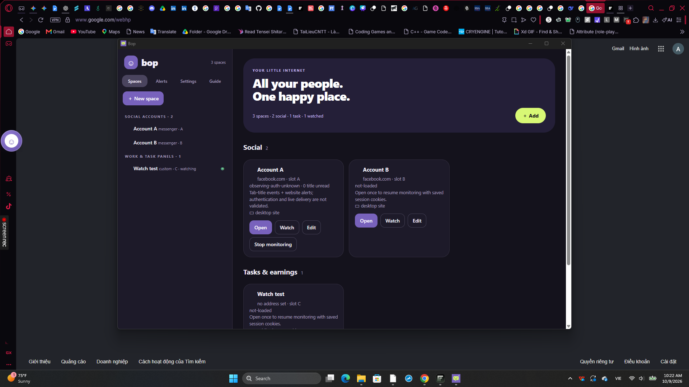
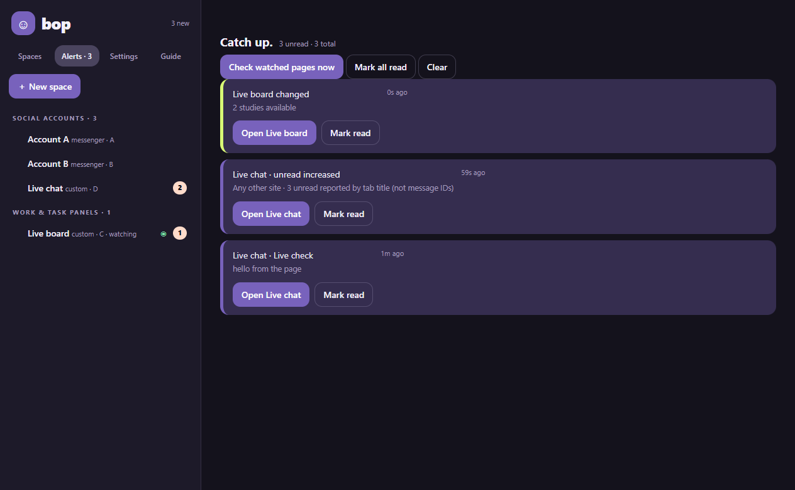
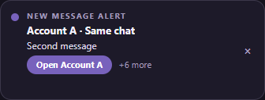
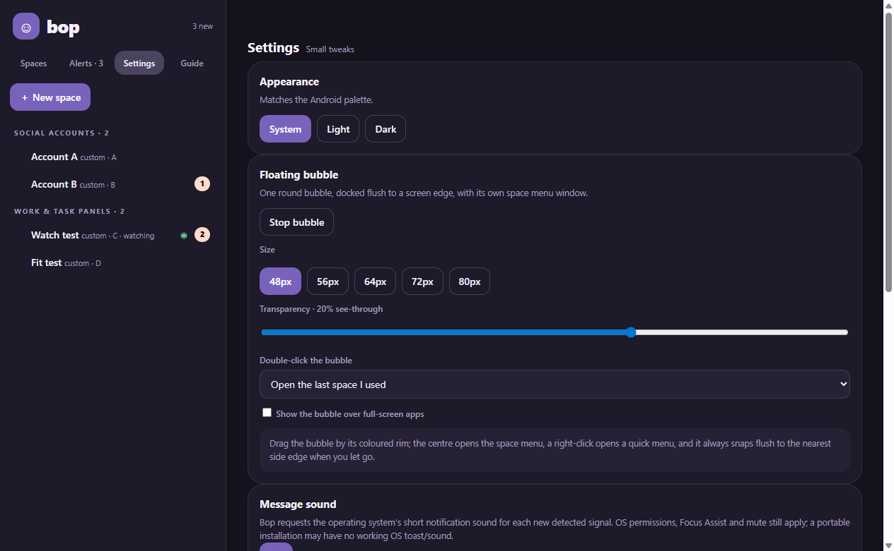

0.1.4 (9 October 2026). Three surfaces of the Bop-0.1.4-portable.exe build
(that build and every other one before 0.1.9 were deleted on 10 October 2026, so the file named here is
a record, not something on disk),
captured while it ran as a normal application and its own live check drove it:
the whole desktop with the 64 px bubble docked flush to the left edge and the dashboard open;
the Alerts page after a web notification and a watched-page change reached it; and Bop's own reminder
card carrying a message a page raised itself. Live check:
13/13 steps, ok: true —
live-check-014.json; smoke:
ok: true, 30 steps —
packaged-smoke-014.json.
The profile this copy started from stored the old bubble: false default; the window
enumeration of the running app reports "Bop bubble" visible=True at 0,361 size 64x64 next
to the dashboard. That is the "bubble is there when the computer starts" behaviour.

The page in space Live chat called its own new Notification('Live check', …).
Bop mirrored it into the alert list and drew this card, without stealing focus.
Three alerts in one list: a web notification, an unread tab title, and a watched page that changed in place and raised its card on the watcher's own timer.

Every build is not code-signed, so Windows SmartScreen warns on first launch (More info → Run anyway). The pages below are local fixture pages, not real accounts: no Messenger, TikTok or Telegram sign-in was used, and no real provider message was delivered.
Captured by desktop/dist/Bop-0.1.3-portable.exe (since deleted) during its 25-step smoke
on 8 October 2026: ok: true, 25 steps, 4 alerts —
packaged-smoke.json.
Spaces A and B point at the same local fixture page. Notice the unread metadata per space and the separate browser session each space keeps.
The bubble shows the pending count; the smoke drives the real IPC path and the live badge moves from 4 to 3 when account A's alert is marked read.
This is the 0.1.3 fix that made a message visible again: Bop draws its own card in the corner of the screen because Windows drops every toast for an application with no Start Menu shortcut — which is exactly the portable build. The smoke asserted that the card sits fully on screen, stays clear of a bubble parked in the same corner, and that opening it opens account A and marks the alert read.

A social space asks for the desktop site, because the phone layouts of TikTok, WhatsApp, Snapchat and Skype have no messages page to watch at all.
Stop monitoring releases a space and keeps its cookies; message sound is Bop's own sound only, so detection continues while it is muted.

showNotification and Web Push are still not captured by the bridge.Full write-up: verification.md, desktop.md, release record.